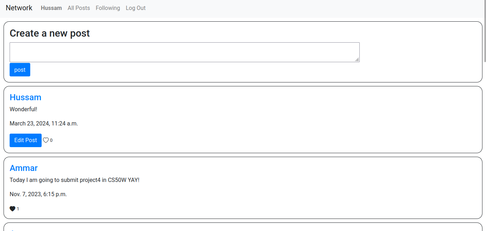
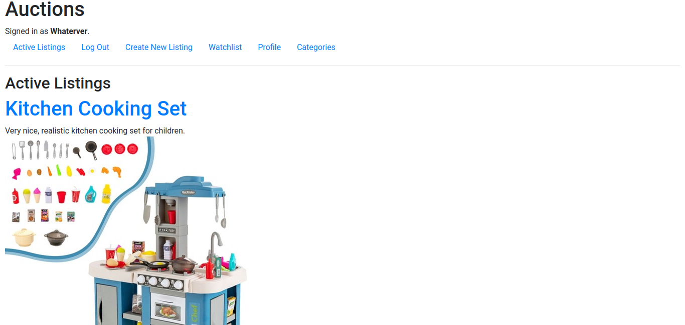
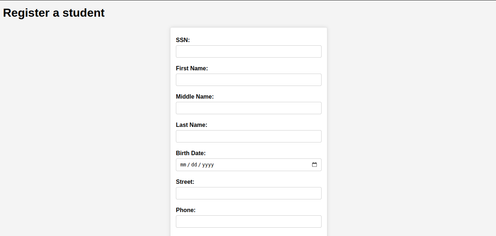
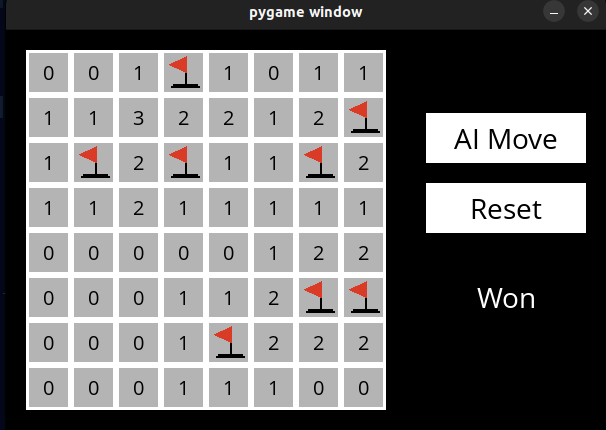

Web Projcets
Created a simple social network for Harvard's CS50W, where users can post, follow other users,
like posts with a pagination mechanism. The web app is built using
Python’s Django web framework and JavaScript, HTML and CSS, with
Bootstrap for styling.


An eBay-like e-commerce auction site that allows users to post auction listings, place bids on listings, comment on those listings, and add listings to a “watchlist.” Created through Python's Django web framework

A system that allows students to access their enrolled courses,
instructors to assign marks to the students, and admins to register students. This project was built to
showcase the evolution of network applications, starting from socket
programming, through Java servlets and finally spring boot framework

A convolutional neural network designed to classify road signs based on an image of those signs. The dataset is from the German Traffic Sign Recognition Benchmark (GTSRB). Used opencv and tenserflow to build the ANN,pooling size of 2*2 and using one hidden layer with 256 nodes, 50% dropt out, and a final tweek of squishing the image between 0-1 by dividing the image matrix by 255, the algorithm achieved an accuracy of 0.9794 and loss of 0.093.

An AI to predict whether online shopping customers will complete a purchase or not using Scikit-Learn’s KNN.

A group project where we worked on a music genre classification problem, the model was built using variuos techniques like XGBoost, Support vector machine and random forest classification

A question answering machine that uses a corpus of documents and
retrieves the most relevant sentence based on the user question using
tf-idf statistic. This was built using mainly python's NLTK library.